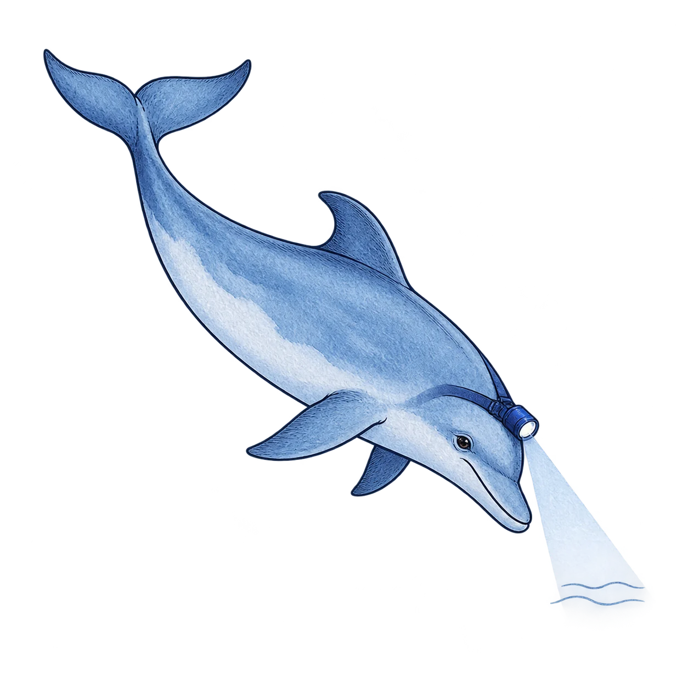

01 / Scout
The research companion
A welcoming illustration for Learn, onboarding and the end of a report. Best at medium size; not a replacement for the sonar logo.
Visual direction · first exploration
Meet the dolphin detectives: a small dose of warmth for serious research into what sits below the token.
Original artwork and placement proposals. A mascot for the research—not a seal of approval for the assets.
See how it could fit ↓
A family, not a sticker collection
Blue ink, icy washes and a practical headlamp. Quietly smiling, naturally shaped, curious rather than comic.
A welcoming illustration for Learn, onboarding and the end of a report. Best at medium size; not a replacement for the sonar logo.
For the landing-page explainer and a pitch-cover treatment. Legal rights, custody, powers and money flows remain HTML labels, not tiny words baked into art.

For research gaps, source-watch introductions and quiet loading states. The text still says what was checked, when, and what failed.
Proposed placements
These are visual mockups, not live monitoring results. The existing pitch has not been edited.
Ownership. Custody. Control. Redemption. Fees. Follow the connections and see what each claim rests on.
Inspect a real example →Documents, issuer registries and on-chain controls.
A changed source needs analysis. Fetching it again does not establish that the holder’s rights stayed the same.
Use beside the introduction. Never replace timestamps, failure states or evidence labels with a happy dolphin.
No specialist knowledge required. Start with what you own, then follow the evidence as far as you like.
One illustration per section is enough. No floating assistant, speech bubbles or animated distractions.
RWA Sonar · see what sits below the surface
Open the unchanged eight-slide pitch →The restraint is part of the identity